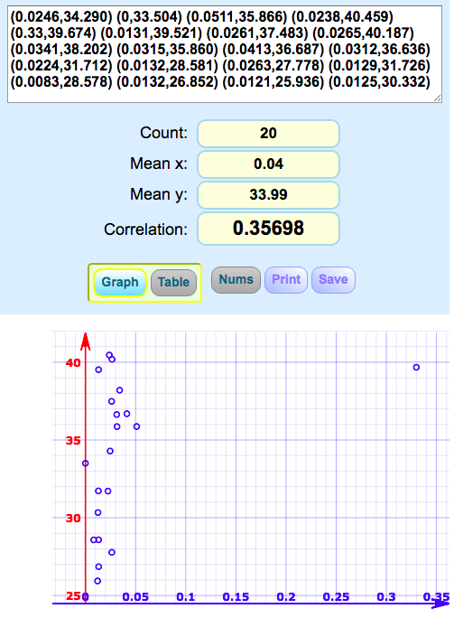
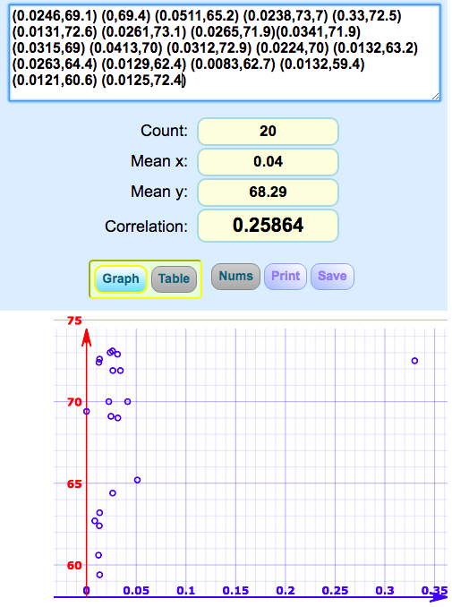
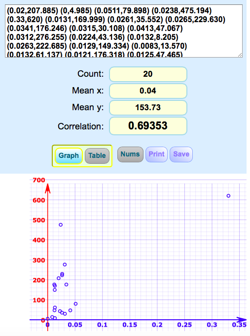

About the CRAWCI project
This project belongs to the 'Knowledge Representation and Extraction' course of the University of Bologna, a.y. 2018/2019. The project is aimed at extracting Open Data with the final goal to covert extracted data in a linked open data environment as the RDF graph.
This project is aimed at implementing the ethical-legal and technical analysis of a particular collection of Open Government Data, for the creation of a new collection, clean and enriched with the final goal to confirm or disprove the following hypothesis “The presence of cultural institutions influences wages and crime rate in the regions.
The goals of the project
1. Creating a new mashup (final dataset) by aligning acquired datasets.
1. Developing the ontology for sharing data in LOD.
2. Producing the final dataset as a 5 star Open Data, following the principles of suggested a 5-star deployment scheme:
- make your data available on the Web under an open license.
- make it available as structured data (machine readable data) (e.g. Excel) -make it available in a non-proprietary open format (CSV)
- Use a single data model to publish data on the Web: RDF
- link RDF to provide context
3. Visualising the result by creating explorable and clickable map.
The full documentation of CRAWCI Project can be found on Github.
Introduction
In modern theoretical approaches, the culture is considered as a value, which is connected to the quality of human living. The cultural forms have been and are still used for the accomplishment of wider and bigger aims in education, building a democratic society of strong individuals, achieving progress in all spheres of life. The presence of cultural institutions enriches and raises the quality of life, provides economic and spiritual reproduction.
The culture as a resource for development refers to the way of life, the wealth, the human relationship with others, including, for example, labor relations and conditions.
If labor market conditions are related in an important way to crime, or individual’s intentions to commit criminal acts are altered by the economic situation, then one may see the dependency of wages and crimes. At this point, we are making an assumption that the level of cultural education is linked both to labor conditions of an individual as well as crime rates. Hence, our hypothesis is that the presence of cultural institutions influences crime rate and amount of salaries.
Application Scenario
CRAWCI aligns data from different sources in order to gain knowledge about the existence of the cultural institutions throughout Italian regions. The project looks at the relationship between the number of cultural institutions, digitalization and the number of crime reports by regions in Italy.
The project aligns 1) the number of theaters; 2)the percentage of internet usage in families; 3) the number of crime reports; 4)the average salary; 5) The density of cultural institutions per square km.
The CRAWCI develops the CRAWCI ontology for sharing data in LOD.
The project produces the final dataset as a 5 star Open Data, following the principles of suggested a 5-star deployment scheme
The final dataset will The result will be presented as an explorable map that allows users to visualize all the data about regions.
Original datasets and mushup dataset
D1
Source: I.Stat, Reddito netto: Regioni e tipo di comune, viewed 14 November 2019, http://dati.istat.it/Index.aspx?QueryId=22919
License: Creative Commons License – Attribution – 3.0 https://www.istat.it/it/note-legali
Content description: The dataset provides data about average annual income of families in eur by region.
D2
Source: I.Stat, Delitti denunciati dalle forze di polizia all'autorità giudiziaria, viewed 14 November 2019,
http://dati.istat.it/Index.aspx?DataSetCode=DCCV_DELITTIPS
License: Creative Commons License – Attribution – 3.0 https://www.istat.it/it/note-legali
Content description: The datasets provides information on number of crimes reported by the police to the judicial authority.
D3
Source: MiBACT, Luoghi della cultura, electronic dataset, Gli Open Data, viewed 14 November 2019, http://dati.beniculturali.it/lodview/resource/datasetLuoghiDellaCultura.html
License: https://creativecommons.org/licenses/by/3.0/
Content description: This dataset lists cultural institutions in Italy providing information about their location, identification and services.
In order to extract the data we used the [SPARQL endpoint](http://dati.beniculturali.it/sparql) of dati.beniculturali.it by running the following query:
select * where {
select distinct ?s as ?subject
?Nome_Istituzionale
?Descrizione
?Identifier
?Latitudine
?Longitudine
?Disciplina
?Indirizzo
?Codice_postale
?Comune
?Provincia
?Prenotazioni
?Orari_di_apertura
?Telefono
?Fax
?Email
?WebSite
str(?Biglietti) as ?Biglietti
?Servizi
where {
graph <http://dati.beniculturali.it/mibact/luoghi> {
?s rdf:type cis:CulturalInstituteOrSite ;
cis:institutionalCISName ?Nome_Istituzionale .
optional { ?s l0:description ?Descrizione }
optional { ?s l0:identifier ?Identifier }
optional { ?s geo:lat ?Latitudine }
optional { ?s geo:long ?Longitudine }
optional { ?s cis:hasDiscipline [l0:name ?Disciplina] }
optional {
?s cis:hasSite [cis:siteAddress ?address ] .
optional { ?address clvapit:fullAddress ?Indirizzo }
optional { ?address clvapit:postCode ?Codice_postale }
optional { ?address clvapit:hasCity [rdfs:label ?Comune] }
optional { ?address clvapit:hasProvince [rdfs:label ?Provincia] }
}
optional {?s accessCondition:hasAccessCondition [rdf:type accessCondition:Booking ;
rdfs:label ?Prenotazioni] }
optional {?s accessCondition:hasAccessCondition [rdf:type accessCondition:OpeningHoursSpecification ;
l0:description ?Orari_di_apertura ] }
optional {
?s smapit:hasOnlineContactPoint ?contactPoint .
optional { ?contactPoint smapit:hasTelephone [smapit:hasTelephoneType <https://w3id.org/italia/controlled-vocabulary/classifications-for-public-services/channel/031> ;
smapit:telephoneNumber ?Telefono] }
optional { ?contactPoint smapit:hasTelephone [smapit:hasTelephoneType <https://w3id.org/italia/controlled-vocabulary/classifications-for-public-services/channel/033> ;
smapit:telephoneNumber ?Fax] }
optional { ?contactPoint smapit:hasEmail [smapit:emailAddress ?Email] }
optional { ?contactPoint smapit:hasWebSite [smapit:URL ?WebSite] }
}
optional {
?s potapit:hasTicket ?ticket .
?offer potapit:includes ?ticket ;
potapit:hasPriceSpecification [potapit:hasCurrencyValue ?Biglietti]
}
optional { ?s cis:providesService [l0:name ?Servizi] }
}
}
order by ?s
}
limit 100
offset 0
D4
Source: I.Stat,Internet: access and type of use, viewed 14 November 2019
http://dati.istat.it/Index.aspx?QueryId=22994&lang=en
License: Creative Commons License – Attribution – 3.0 https://www.istat.it/it/note-legali
Content description: This dataset shows percentage of internet use in families by regions
D5
Source: DatiOpen.it, Mappa dei teatri in Italia, viewed 14 November 2019
http://www.datiopen.it/it/opendata/Mappa_dei_teatri_in_Italia
License: Open Database License https://opendatacommons.org/licenses/odbl/
Content description: This dataset shows the number of theaters region by region in Italy.
D6
CRAWCI Project, The final dataset, created 15 November 2019
CSV: https://github.com/simayguzel/crawci/blob/master/dataset/crawciopendata.csv
RDF: https://github.com/simayguzel/crawci/blob/master/dataset/dataset.rdf
License:
Content description: This dataset includes1) the number of theaters; 2)the percentage of internet usage in families; 3) the number of crime reports; 4)the average salary; 5) The density of cultural institutions per square km. The result will be a presented as an explorable map which allows users to visualize all the data about regions.
Creating the CRAWCI Ontology
An ontology is a detailed model of a slice of reality which is based on the facts that we know about that reality. This model is a description of some of the things and some of the relationships between the things that are known about that reality.
The **CRWACI Ontology** modeling was based on the analyzed and extracted data while creating our mashup datasets. Hence, it has been developed in a manner that is intended to promote a shared understanding of cultural heritage information and statistical data. We also paid special attention to modeling crime-related namespaces to provide information on the crime situation in the Italian regions observing the practice of different crime types. In this way, it helps to record the nature of data and sufficiently describe it on Semantic Web

As the rules that we have created for different crime types are shown below, @A* is our cell reference notation. * means go through all the rows within the cell range selection.
Individual: @A*
Facts: hasNofMassMurder@B*(xsd:integer),
hasNofIntentionalHomicides @C*(xsd:integer),
hasNofHomicidesForTheftOrRobbery @D*(xsd:integer),
hasNofHomicidesOfMafia @E*(xsd:integer),
hasNofTerroristHomicides @F*(xsd:integer),
hasNofAttemptedHomicides @G*(xsd:integer),
hasNofInfanticides @H*(xsd:integer),
hasNofManslaughter @I*(xsd:integer),
hasNofUnintentionalHomicides @J*(xsd:integer),
hasNofBlows@L*(xsd:integer),
hasNofCulpableInjuries @M*(xsd:integer),
hasNofHomicidesFromRoadAccident @K*(xsd:integer),
hasNofMenaces @N*(xsd:integer),
hasNofKidnappings @O*(xsd:integer),
hasNofOffences @P*(xsd:integer),
hasNofRapes @Q*(xsd:integer),
hasNofSexualActivityWithaMinor @S*(xsd:integer),
hasNofExploitationAndAbettingProstitution @T*(xsd:integer)
hasNofChildPornographyAndPossessionOfPaedoPornographicMaterials @U*(xsd:integer),
hasNofThefts @V*(xsd:integer),
hasNofBagSnatching @W*(xsd:integer),
hasNofPickpocketing @X*(xsd:integer),
hasNofBurglary @Y*(xsd:integer),
hasNofShoplifting @Z*(xsd:integer),
hasNofTheftFromVehicle @AA*(xsd:integer),
hasNofTheftOfArtObjects @AB*(xsd:integer),
hasNofTheftOfCargoTrucksCarryingFreight @AC*(xsd:integer)
hasNofMopedTheft @AD*(xsd:integer),
hasNofMotorcycleThefts @AE*(xsd:integer),
hasNofCarTheft @AF*(xsd:integer),
hasNofRobberies @AG*(xsd:integer),
hasNofHouseRobbery @AH*(xsd:integer),
hasNofBankRobbery @AI*(xsd:integer),
hasNofPostOfficeRobbery @AJ*(xsd:integer),
hasNofShopRobbery @AK*(xsd:integer),
hasNofStreetRobbery @AL*(xsd:integer),
hasNofExtortions @AM*(xsd:integer),
hasNofSwindlesAndCyberFrauds @AN*(xsd:integer),
hasNofCybercrime @AO*(xsd:integer),
hasNofCounteractionsOfGoodsAndIndustrialProducts @AP*(xsd:integer),
hasNofIntellectualProperyViolations @AQ*(xsd:integer),
hasNofReceivingStolenGoods @AR*(xsd:integer),
hasNofMoneyLaundering @AS*(xsd:integer),
hasNofUsury@AT*(xsd:integer),
hasNofDamages @AU*(xsd:integer),
hasNofArson @AV*(xsd:integer),
hasNofForestArson @AW*(xsd:integer),
hasNofDamageFollowedByArson @AX*(xsd:integer),
hasNofTraffickingAndDrugsPossession @AY*(xsd:integer),
hasNofAttacks @AZ*(xsd:integer),
hasNofCriminalAssociation @BA*(xsd:integer),
hasNofMafiaCriminalAssociation @BB*(xsd:integer),
hasNofSmuggling @BC*(xsd:integer),
hasNofOtherCrimes @BD*(xsd:integer)
In this way, it helps to mediate between different sources of information on the Semantic Web.
The full Ontology documentation and visualisation can be found here
The CRAWCI Ontology Visualisation
To visualize our ontology we used Rizhomik tool.
The CRAWCI Ontology Visualisation can be found here.
The CRAWCI Ontology clsss hierarchy can be found here.
The CRAWCI Ontology graph can be found here.
CSV to RDF Conversion
To convert our data we used csv2rdf which is a Java based application, which relies on Apache Jena to convert tabular data to RDF.
The binaries can be obtained by compiling the source code with MAVEN from command line, i.e.
Compiling
bash
mvn clean install
```
Once the source code have been compiled a JAR named stlab.csv2rdf-1.0.jar is available in the target folder.
Usage
The JAR stlab .csv2rdf-1.0.jar can be used as a command line tool.
The synopsis is the following
bash
java -jar stlab.csv2rdf-1.0.jar [OPTIONS] CSV_FILE
The options available are the following:
* -s,--separator <char>
The character used as separator within the CSV file (e.g. , or ;).
* -m,--mapping <file>
A file providing the mapping between CSV columns and the properties of our target CRAWCI ontology.
The file contains a set of key=value lines, where each key represents a column position in the source CSV (the counting of positions starts from index 1) and each value is a pair property-datatype composed of property URI form a target ontology or vocabulary and a datatype URI. The property-datatype pairs are separated by the character '>'. The datatype is optional, hence it is possible to provide the property URI only without any datatype. We remark that if no datatype is provided, then the tool tries to infer the more appropriate datatype for the value to transform to RDF.
Additionally, the following file named *mapping* contain key=property>datatype pairs, define the mapping to be used in order to generate the properties.
```java
1. http://www.semanticweb.org/simayguzel/ontologies/2019/10/crawci#Region
2. http://www.semanticweb.org/simayguzel/ontologies/2019/10/crawci#hasTheater
3. http://www.semanticweb.org/simayguzel/ontologies/2019/10/crawci#hasAverageSalary
4. http://www.semanticweb.org/simayguzel/ontologies/2019/10/crawci#hasInternetDifusion
5. http://www.semanticweb.org/simayguzel/ontologies/2019/10/crawci#hasCriminalReport
6. http://www.semanticweb.org/simayguzel/ontologies/2019/10/crawci#hasDensity
7. http://www.semanticweb.org/simayguzel/crawci#hasCrimeLevel
9. http://www.semanticweb.org/simayguzel/crawci#hasInternetDiffusionLevel
10.http://www.semanticweb.org/simayguzel/ontologies/2019/10/crawci#hasNofTheater
11.http://www.semanticweb.org/simayguzel/crawci#hasSalaryLevel
All the mapping files can be found here on Github Repository folder csv2rdf.
Hence, the following line provides an example about how to use the tool from command line in order to obtain RDF from CSV and saving its content into a file named *musicians.ttl*. We suppose that the input CSV is actually a tab-separated file.
bash
java -jar stlab.csv2rdf-1.0.jar -s '\t' -m mapping -o crawci.ttl cleandata.csv
The execution of the tool with the arguments as provided produced the following RDF serialised by using the TURTLE syntax.
Querying our Data
Queries
In this section, the information related to Hip Hop and Rap is queried by using the SPARQL language. The data is extracted from DBpedia by using Virtuoso SPARQL Query Editor and Wikidata.
| Question | SPARQL Query | Answer |
|---|---|---|
| What regions have the high crime rate? |
BASE <http://www.semanticweb.org/simayguzel/crawci> PREFIX crawci: <http://www.semanticweb.org/simayguzel/crawci>
SELECT ?Region WHERE { ?Region crawci:hasCriminalReport ?CriminalReport . FILTER (?CriminalReport > 127.0878) . } |
Output: Piemonte Trentino Lombardia Veneto Emilia-Romagna Toscana LAzio Molise Campania Sicilia |
| What regions have the low crime rate? |
BASE <http://www.semanticweb.org/simayguzel/crawci> PREFIX crawci: <http://www.semanticweb.org/simayguzel/crawci>
SELECT ?Region WHERE { ?Region crawci:hasCriminalReport ?CriminalReport . FILTER (?CriminalReport < 127.0878) . } |
Output: Valle_d'Aosta Liguria Trentino Friuli-Venezia_Giulia Umbria Marche Abruzzo Molise Basilicata Calabria Sardegna |
| What regions have high diffusion of cultural institutions per km? |
BASE <http://www.semanticweb.org/simayguzel/crawci> PREFIX crawci: <http://www.semanticweb.org/simayguzel/crawci>
SELECT ?Region WHERE { ?Region crawci:hasDensity ?CulturalInstitution . FILTER (?CulturalInstitution > 0.0262) . } |
Output: Liguria Emilia-Romagna Toscana Umbria Marche Lazio Campania |
| What regions have low diffusion of cultural institutions per km? |
BASE <http://www.semanticweb.org/simayguzel/crawci> PREFIX crawci: <http://www.semanticweb.org/simayguzel/crawci>
SELECT ?Region WHERE { ?Region crawci:hasDensity ?CulturalInstitution . FILTER (?CulturalInstitution < 0.0262) . } |
Output: Valle_d'Aosta Liguria Friuli-Venezia_Giulia Umbria Marche Abruzzo Molise Basilicata Calabria Sardegna |
| What regions have low level of internet diffusion? |
BASE <http://www.semanticweb.org/simayguzel/crawci> PREFIX crawci: <http://www.semanticweb.org/simayguzel/crawci>
SELECT ?Region WHERE { ?Region crawci:hasInternetDifusionLevel ?DifusionofInternet . FILTER (?DifusionofInternet < 68.32) . } |
Output: Liguria Molise Campania Puglia Basilicata Calabria Sicilia |
| What theatres are located in Abruzzo? |
BASE <http://www.semanticweb.org/simayguzel/crawci> PREFIX crawci: <http://www.semanticweb.org/simayguzel/crawci>
SELECT* WHERE { ?Theater crawci:locatedIn ?Abruzzo .
} |
Output: Auditorium AuditoriumSant'Agostino TeatroComunale TeatroDelMare TeatroMarrucino |
|
What regions have the lowest average salary? |
BASE <http://www.semanticweb.org/simayguzel/crawci> PREFIX crawci: <http://www.semanticweb.org/simayguzel/crawci>
SELECT ?Region WHERE { ?Region crawci:hasAverageSalary ?AverageSalary . FILTER (?AverageSalary < 29.843) . } |
Output: Campania Puglia Calabria Sicilia
|
Our Results
This part presents the results of the data analysis. We ordered the regions descendingly from the first region featuring the highest value to the last one with the lowest value.
According to the obtained data, Lombardia is the region with the biggest salary, while Sicilia has the lowest one:
1. Lombardia (**the biggest** average salary)
2. Emilia-Romagna
3. Trentino Aldo Adige
4. Veneto
5. Toscana
6. Friuli-Venezia Giulia
7. Marche
8. Lazio
9. Liguria
10. Umbria
11. Piemonte
12. Valle d'Aosta
13. Puglia
14. Abruzzo
15. Sardegna
16. Molise
17. Basilicata
18. Campania
19. Calabria
20. Sicilia
Total number of theatres
According to the obtained data, Lombardia is the region with the highest number of theatres, while Molise has the lowest one:
1. Lombardia
2. Veneto
3. Emilia-Romagna
4. Toscana
5. Sicilia
6. Piemonte
7. Trentino Aldo Adige
8. Lazio
9. Marche
10. Puglia
11. Friuli-Venezia Giulia
12. Calabria
13. Liguria
14. Sardegna
15. Campania
16. Umbria
17. Abruzzo
18. Basilicata
19. Valle d'Aosta
20. Molise
Diffusion of the Internet
According to the obtained data, Lombardia is the region with the highest percentage of diffusion of the internet, while Calabria has the lowest one:
1. Lombardia
2. Friuli-Venezia Giulia
3. Lazio
4. Veneto
5. Trentino Aldo Adige
6. Sardegna
7. Emilia-Romagna
8. Toscana
9. Marche
10. Abruzzo
11. Valle d'Aosta
12. Piemonte
13. Umbria
14. Liguria
15. Campania
16. Molise
17. Basilicata
18. Puglia
19. Sicilia
20. Calabria
Total number of criminal reports
According to the obtained data, Lombardia is the region with the highest crime rate, while Valle d'Aosta has the lowest one:
1. Lombardia
2. Lazio
3. Emilia-Romagna
4. Campania
5. Piemonte
6. Sicilia
7. Toscana
8. Veneto
9. Puglia
10. Liguria
11. Calabria
12. Sardegna
13. Marche
14. Abruzzo
15. Friuli-Venezia Giulia
16. Trentino Aldo Adige
17. Umbria
18. Basilicata
19. Molise
20. Valle d'Aosta
Cultural institutions
According to the obtained data, Liguria is the region with the highest density of cultural institutions, while Valle d'Aosta has the lowest one. The regions order descendingly according to the total number:
1. Liguria
2. Marche
3. Toscana
4. Umbria
5. Lazio
6. Emilia-Romagna
7. Campania
8. Friuli-Venezia Giulia
9. Piemonte
10. Lombardia
11. Abruzzo
12. Calabria
13. Molise
14. Veneto
15. Puglia
16. Sardegna
17. Sicilia
18. Basilicata
19. Trentino Aldo Adige
20. Valle d'Aosta
Types of crimes
Our final dataset features 56 types of crimes, after analyzing all of them we ended up paying more attention to some crime types. For example, theft of art objects which obviously leads to the conclusion that the presence of cultural institutions that have valuable instances in their collections is directly connected to the potential threat of crime. Below are the top 7 regions featuring the highest number of **theft of art objects**:
1. Lombardia
2. Toscana
3. Lazio
4. Campania
5. Emilia-Romagna
6. Sicilia
intellectual property violations are spread mostly in the regions, many of which represent the highest cultural value in our dataset, ex. Lazio, Campania have the highest density of cultural institutions. Also, Sicilia, Lazio and Lombardia feature the highest number of theatres, which lead us to the conclusion that regions with a better presence of cultural organizations can be connected to number of Intellectual property violations that include literary works, inventions, and designs that can be considered as results of a more educated and cultural society.
1. Campania
2. Sicilia
3. Lazio
4. Puglia
5. Lombardia
6. Calabria
swindles and cyber frauds and cybercrime are present in the regions, 3 of which demonstrate the higher percentage of diffusion of the Internet (Lombardia, Lazio, Veneto).
swindles and cyber frauds:
1. **Lombardia**
2. Campania
3. **Lazio**
4. Piemonte
5. Emilia-Romagna
6. **Veneto**
cybercrime:
1. Lombardia
2. Liguria
3. Lazio
4. Toscana
5. Piemonte
6. Emilia-Romagna
Correlation
In order to answer our initial question weather, there is a strong relationship between the density of cultural institutions and(respectively) average salary, internet diffusion and the number of total criminal reports
and hence to approve o disapprove our hypothesis "The presence of cultural institutions increases the average salary and dicreases the crime rate", we have calculated the correlation coefficients. The correlation is used in statistics to measure how strong a relationship is between two variables. The formulas return a value between -1(negative correlation) and 1(positive correlation).
By using an online tool (mathsisfun.com/data/correlation-calculator.html), Pearson's correlation is calculated by taking the results from our dataset. X axis - the values of cultural institution density and Y axis - the values of average salary, internet diffusion, the number of total criminal reports one by one.
- Pearson's correlation between the cultural institution density and average salary(the first values in parenthesis stand for the C.I. density while the second ones are for the annual average salary:
(0.0246,34.290) (0,33.504) (0.0511,35.866) (0.0238,40.459) (0.33,39.674) (0.0131,39.521) (0.0261,37.483) (0.0265,40.187)(0.0341,38.202) (0.0315,35.860) (0.0413,36.687) (0.0312,36.636) (0.0224,31.712) (0.0132,28.581) (0.0263,27.778) (0.0129,31.726) (0.0083,28.578) (0.0132,26.852) (0.0121,25.936) (0.0125,30.332)
- Correlation between the density of cultural institutions and average salary: 0.35698. Positive correlation is obtained which proves our hypothesis: when the presence of C.I. is dense, the average salary increases, too.

- Pearson's correlation between the cultural institution density and internet diffusion(the first values in parenthesis stand for the C.I. density while the second ones are for the internet diffusion:
(0.0246,69.1) (0,69.4) (0.0511,65.2) (0.0238,73,7) (0.33,72.5) (0.0131,72.6) (0.0261,73.1) (0.0265,71.9)(0.0341,71.9) (0.0315,69) (0.0413,70) (0.0312,72.9) (0.0224,70) (0.0132,63.2) (0.0263,64.4) (0.0129,62.4) (0.0083,62.7) (0.0132,59.4) (0.0121,60.6) (0.0125,72.4)
- Correlation between the density of cultural institutions and internet diffusion : 0.25864. Like average salary, there is a positive correlation between the C.I. density and internet diffusion and it can be deduced that the denser cultural institution presence is, the wider internet spread is.

- Pearson's correlation between the cultural institution density and criminal reports (the first values in parenthesis stand for the C.I. density while the second ones are for the number of criminal reports:
(0.0246,207.885) (0,4.085) (0.0511,79.898) (0.0238,475.194) (0.33,620) (0.0131,169.999) (0.0261,35.552) (0.0265,229.630)(0.0341,176.246) (0.0315,30.108) (0.0413,47.067) (0.0312,276.255) (0.0224,43.136) (0.0132,8.205) (0.0263,222.685) (0.0129,149.334) (0.0083,13.570) (0.0132,61.137) (0.0121,176.318) (0.0125,47.465)
- Correlation between the density of cultural institutions and the number of total criminal reports: 0.69353. So, there is a positive correlation between them which means that when there is a high density of cultural institution, criminality increases which also proves our hypothesis.

Therefore, our hypothesis The presence of cultural institutions increases the average salary and decreases the crime rate was not fully proved because according to the nature of our hypothesis we were supposed to have negative correlation between the density of cultural institutions and crime rate. Instead, the correlation turned out to be not only positive but the strongest one among our data.


{kind=link}
{kind=link}
{kind=link}